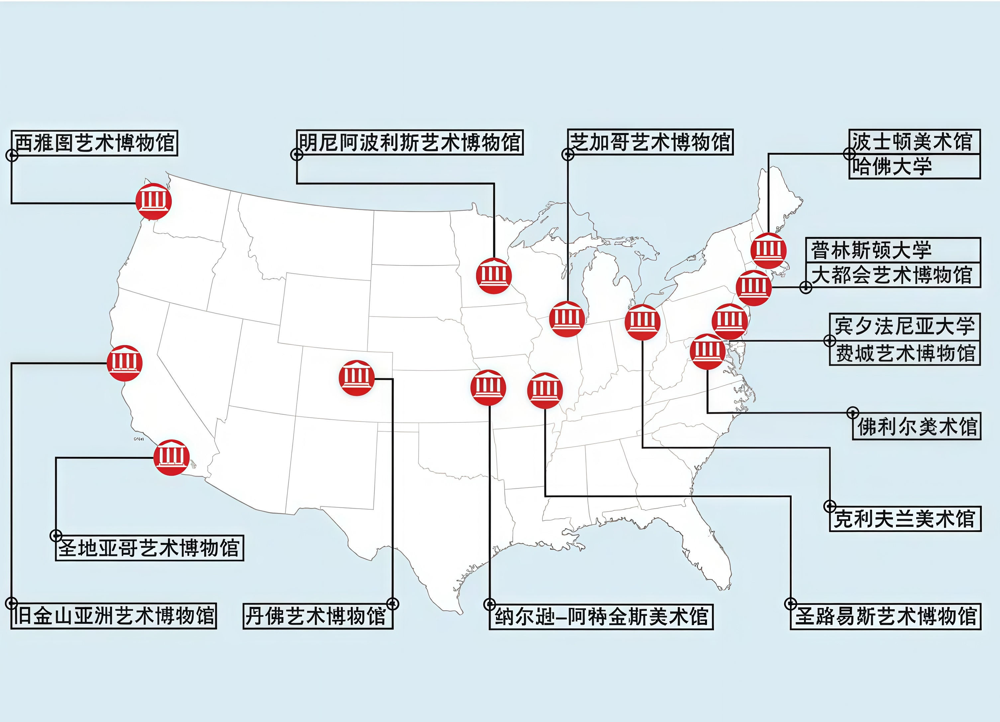
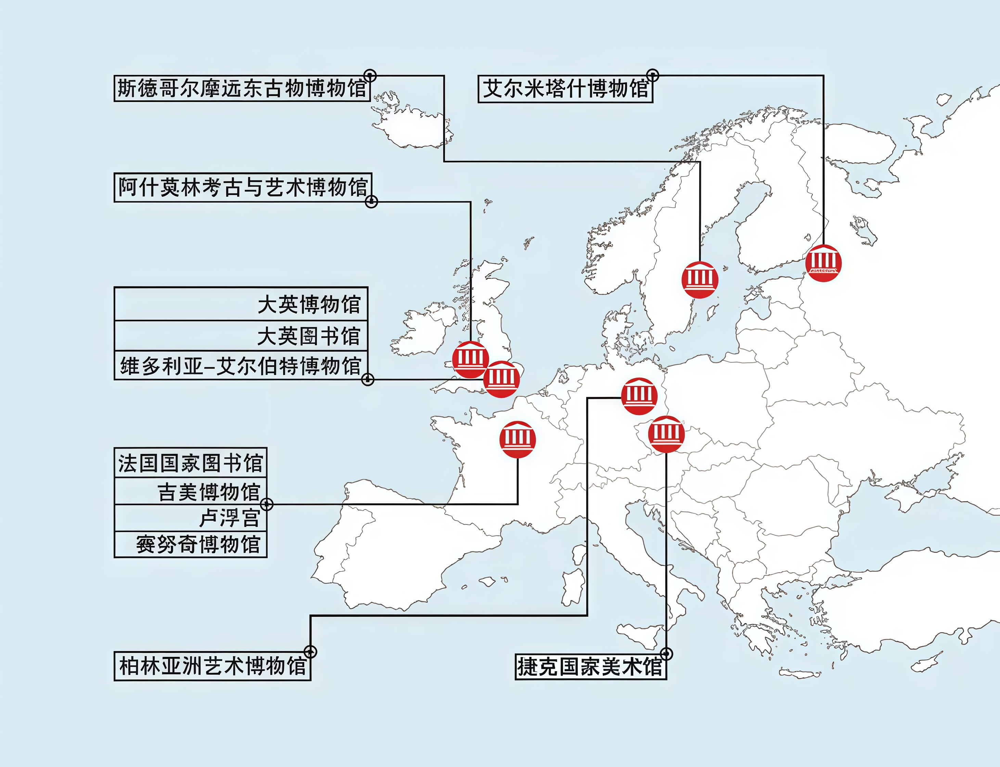
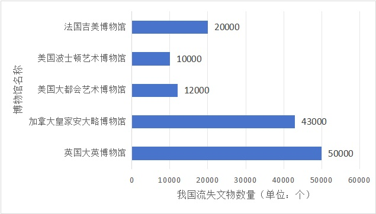
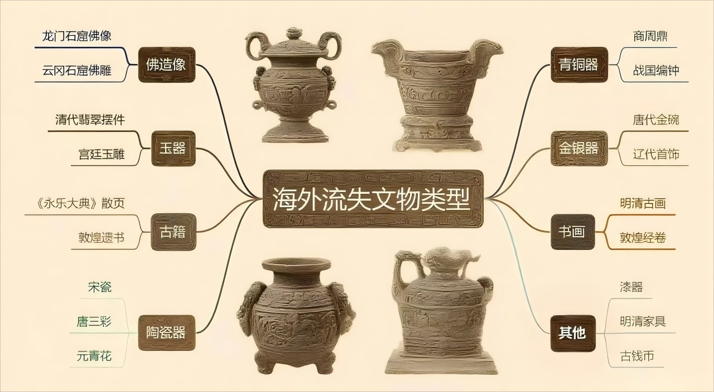

数字为"舟"
海外流失文物的云端回归

据联合国教科文组织不完全统计，在全世界47个国家、218家博物馆中，中国文物数量达167万件，而流散在海外民间的中国文物数量更是馆藏的10倍之多。
数据来源：联合国教科文组织、央视新闻
历史脉络：文物迁徙之路
探索中国文物流失海外的历史轨迹
19世纪中叶至20世纪初（战争掠夺期）
战争与掠夺
主要事件：鸦片战争、第二次鸦片战争（1860年英法联军劫掠圆明园）、八国联军侵华（1900年洗劫北京）
流失特点：系统性劫掠宫廷、皇家园林及寺庙文物，如圆明园青铜器、瓷器、《四库全书》摹版等
图片来自：央视新闻 纪录片《国宝回家》
1920-1949年（混乱盗掘期）
动荡年代的流失
主要事件：国民政府时期法律虚设，军阀混战、日军侵华加剧流失
流失途径：外国探险家低价收购或盗掘（如安阳殷墟甲骨被贩至日、美）；日军系统性劫掠明清以上文物运往日本，后部分转至美国
改革开放前：20世纪50-70年代（政策松动期）
特殊时期的流失
主要事件：文革动乱导致文物通过香港走私至国际市场
国家文物商店出口政策允许部分清代文物外流（如嘉庆、道光官窑瓷器）
1980年至今（盗掘走私与回归期）
挑战与希望
现状：有关部门不断完善相关法律、加强执法，但仍有部分珍贵文物通过盗掘走私被贩卖到海外
视频来源：央视新闻
中国政法大学教授 霍政欣：
总体来看，依据国际法和国内法依法展开追索，是目前最为有效、同时也是成本最小的一种追索方式，也是今后中国实现文物回家的最重要的一种方式。
全球分布：文物栖身之所


我国文物流失数量

根据部分西方博物馆的公开数据，仅英国大英博物馆（约5万件）、加拿大皇家安大略博物馆（约4.3万件）、美国大都会艺术博物馆（约1.2万件）、波士顿艺术博物馆（约1万件）以及法国吉美博物馆（约2万件）五家机构所藏的中国文物总数就已多达15万件。
数据来源：五大博物馆公布官方数据
流失文物分类体系

中国流失海外文物主要分为青铜器、陶瓷、书画、玉器等八大类别，其中以佛教造像和宫廷文物最具代表性。